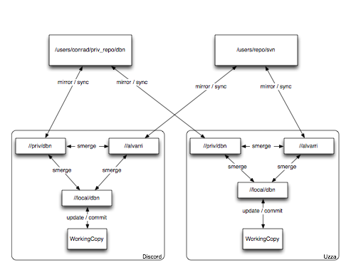

I finally have a system for doing work on my home computer and on my work computer that doesn’t require weird hopping stunts. Mostly this is just simply using one tool for watching over the source code, rather than trying to get multiples to do the job. Nothing really amazing about this, since it is just another application of the distributed revision control models. There is only just two little twists that are important to me.
First is roll-ups, or whatever name you wish to call them by. Basically, take a bunch of commits from this branch, roll them up into one commit over on this other branch. I find it mildly disturbing how many of the tools don’t support that. For me its rather needed. Even without working on two computers, I’m a micro-commiter. The repository pretty much becomes my own fancy (heavyweight) undo buffer. This seems to bother my coworkers, so its nice to be able to send the micro-commits somewhere else.
Second is to sanely deal with one of the upstream copies being subversion. As cool as distributed revision control systems are, work uses a centralized revision model. (which for what we’re doing makes the most sense) As such, the tool has to be able to speak to a subversion repository. This turns out to be the real trick to finding a solution.
I played with lots of the distributed revision control systems out there. Lots of neat stuff, all with a couple of pluses and minuses. But quite a few that bother trying to speak to other systems. They all did this to varying levels of success. Many just pointed to Tailor, which other than the roll-ups requirement, would have worked well. But the subversion upstream thing pretty much pointed me to svk.
It took me a couple of passes through to figure out how to get svk to do what I want. But now that I’ve got things setup, its smooth. Really, figuring out where to put everything and what to call it was the hard part. In actual usage, it is just an extra call to smerge that didn’t exist before with plain svn. Granted the messy part is that I basically have two upstreams.
It is rather messy to try and describe, though it seems to actually work pretty well in practice. There is the main upstream, which is what everyone works from. Then there is my private upstream, which I use primarily to sync changes from home and work before the changes are ready to be put in the main upstream. Both of those are just mirrored in each of the local svk depotmap. Then a local branch on each machine where the working copy is checked out from.
Personally, I made a picture to help me understand what I’m doing:

svk still is missing some things though. Cherry-picking changes during commit or smerge for example. Not something I use very often, but once in a while it is needed to the ends of belief. (in the mean time, extra crap just gets checked in.) I had been using darcs, and have gotten to really like the way it does record to the point of wishing that I could get that on push and pull too.
Previously, I was using a combination of svn, darcs, and dirdiff. Which, while it worked, was prone to inducing massive headaches. (things were mostly ok until something got renamed, then hell broke loose.) So I’m quite happy that this is running smoother now.